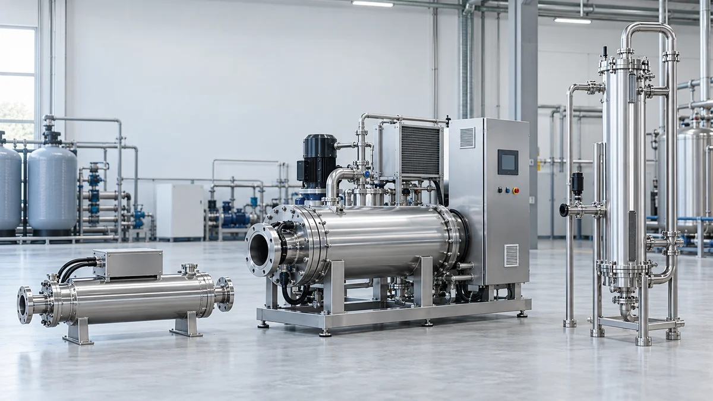
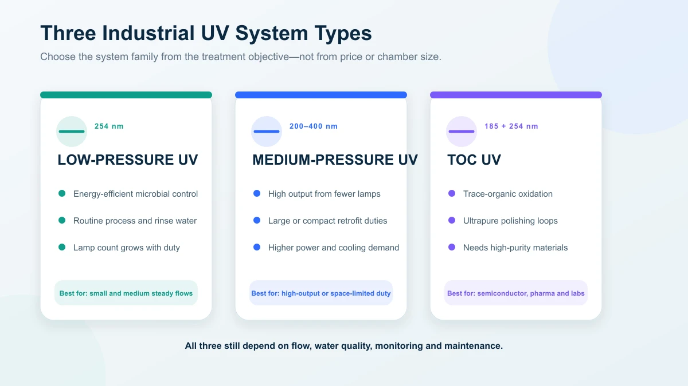
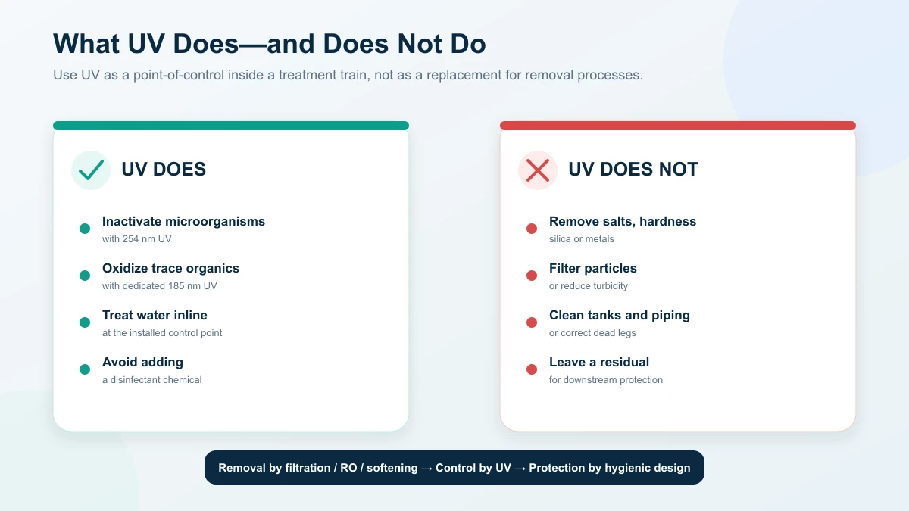

UV Water Treatment Systems: Types, Applications and Cost Guide
System types from 254 nm disinfection to 185 nm TOC oxidation, where each fits in the treatment train and what industrial UV systems cost to own
Ask an Engineering Question ↗
How does UV water treatment work?
Industrial UV water treatment covers two duties: 254 nm microbial inactivation and 185 nm oxidation of trace organic carbon in ultrapure water, delivered by low-pressure, medium-pressure or dedicated TOC reactors. UV removes no salts, particles or turbidity and leaves no residual, so it installs after filtration or membrane stages as a point of control. KONCHE supplies LP, MP and TOC UV systems for industrial duties from 0.25 m³/h standard bands to engineered projects. This guide maps the system types, their places in the treatment train and their lifecycle costs.
On this page
- How does UV water treatment work?
- Types of industrial UV water-treatment systems
- 254 nm versus 185 nm
- Where does UV fit in a treatment train?
- What UV does not do
- UV versus chlorine and RO
- How is a UV system selected?
- How much does an industrial UV system cost?
- Maintenance and monitoring
- How should buyers compare suppliers?
- Frequently asked questions
- Talk to KONCHE about a UV system
How does UV water treatment work?
UV treatment uses light energy inside a flow-through reactor.
- 254 nm UV is absorbed by microbial nucleic acids and prevents organisms from replicating. This is microbial inactivation.
- 185 nm UV is absorbed strongly by water and generates reactive species that oxidize trace organic compounds. This is used for TOC reduction in high-purity and ultrapure-water systems.
No disinfectant chemical is added by the UV process, but performance is local to the reactor. Because there is no residual, downstream tanks and piping still require suitable hygienic design and operating control.
Three conditions determine whether a UV system performs:
- water passes through the reactor within the stated flow range;
- the water has sufficient UV transmittance (UVT);
- lamps, sleeves and sensors remain within their operating and maintenance limits.
Types of industrial UV water-treatment systems
| System type | Output | Main duty | Typical use |
|---|---|---|---|
| Low-pressure (LP) UV | Concentrated around 254 nm | Energy-efficient microbial inactivation | Process water, ingredient water, rinse water, tank circulation and terminal disinfection |
| Medium-pressure (MP) UV | Broad spectrum, typically 200–400 nm | High-output inactivation from fewer lamps | Larger flows, compact retrofits and variable or demanding duties |
| TOC UV reactor | 185 nm, often with 254 nm output | Oxidation of trace organics, with microbial control where specified | Semiconductor, pharmaceutical and laboratory ultrapure-water polishing loops |

The current KONCHE ranges are described on the low-pressure UV, medium-pressure UV and TOC UV degradation product pages.
Low-pressure UV
LP UV is usually the first option for routine disinfection when the flow, UVT and installation conditions fit the available model range. It offers high electrical efficiency and is widely used on small and medium process-water duties.
As duty grows, the design may require more lamps or parallel reactors. Buyers should compare total lamp count, connected power, maintenance access and redundancy—not just the price of one chamber.
Medium-pressure UV
MP systems use high-output broad-spectrum lamps, commonly in the kilowatt range. They can deliver large output from fewer lamps and a compact reactor, which may suit high-flow or space-constrained installations.
The trade-offs are higher power, more demanding lamp and cooling arrangements, and application-specific monitoring. MP is not automatically better at every high flow; it should be compared with an LP bank using the same UVT, performance and operating assumptions.
185 nm TOC UV
TOC reactors are not ordinary disinfection units with a different label. They use lamp envelopes, sleeves and wetted materials selected for high-purity water and 185 nm transmission.
They are installed late in an ultrapure-water train, commonly after RO and EDI and before or around final polishing, depending on the loop design. Selection depends on feed TOC, target TOC, water matrix, flow, loop turnover and downstream polishing. See the detailed TOC UV selection guide.
254 nm versus 185 nm
| Question | 254 nm | 185 nm |
|---|---|---|
| Primary purpose | Microbial inactivation | Trace-organic oxidation |
| Typical water | Filtered process, potable or purified water | High-purity or ultrapure water |
| Main design input | Flow, UVT, required dose/performance and temperature | Flow, feed and target TOC, water matrix and loop conditions |
| Residual protection | None | None |
| What it cannot replace | Filtration, RO, softening or downstream hygiene | RO, EDI, polishing, filtration or sanitary loop design |
Choose the wavelength from the water problem. A disinfection requirement does not automatically need 185 nm, and a TOC requirement cannot be solved by assuming that any 254 nm sterilizer will oxidize trace organics.
Where does UV fit in a treatment train?
UV is generally a late-stage, point-of-control process.
| Application | Typical position | UV function |
|---|---|---|
| Potable or building water | After suitable filtration and before the protected outlet or storage loop | Microbial inactivation |
| Food and beverage process water | Near ingredient-water, rinse-water or circulation use points | Inline control without adding a disinfectant residual |
| Pharmaceutical purified-water loop | After membrane/EDI treatment at a defined polishing or loop-control point | Microbial control and, where specified, TOC reduction |
| Semiconductor and electronics UPW | Late polishing train or distribution loop | Trace-TOC and microbial control |
| Laboratory Type I water | Final polishing and point-of-use system | TOC and microbial control according to instrument needs |
| Reuse water | After treatment that controls solids and UV absorption | One microbial barrier in a multi-barrier reuse process |
UV should not be installed as a substitute for upstream removal. If turbidity, iron, color or suspended solids prevent light transmission, correct those conditions first.
For food applications, see the dedicated food and beverage UV guide.
What UV does not do
UV does not:
- remove dissolved salts, hardness or silica;
- remove suspended solids or turbidity;
- filter dead microorganisms or particles from water;
- clean tanks, piping or product-contact surfaces;
- provide a disinfectant residual in downstream distribution;
- compensate for dead legs, poor tank vents or an uncontrolled bypass.
These boundaries help buyers combine technologies correctly. RO, softening and filtration perform removal; UV provides microbial or organic control at the selected point.

UV versus chlorine and RO
UV versus chlorine
Chlorine and similar disinfectants provide residual protection through distribution. UV acts inside the reactor and leaves no residual. UV is useful where added chemistry is undesirable; chlorine is useful where continuing distribution protection is required. Many plants use both in different parts of the same system.
UV versus reverse osmosis
UV and RO are not substitutes. RO removes dissolved salts, particles and much of the organic load. UV inactivates microorganisms, and 185 nm systems oxidize residual TOC. High-purity systems commonly use them in sequence.
How is a UV system selected?
For disinfection, start with:
- normal and peak flow;
- worst-case UVT and full water analysis;
- required dose, organism or performance specification;
- water-temperature and pressure range;
- upstream treatment and downstream storage;
- installation space, connections and electrical supply;
- monitoring, validation and redundancy requirements.
For TOC duty, replace the disinfection target with feed TOC, outlet TOC, organic-water matrix, loop turnover and polishing requirements.
The detailed method is covered in How to Size a UV Water Treatment System.
How much does an industrial UV system cost?
Published prices rarely describe a complete project. Compare total lifecycle cost:
| Cost item | Main drivers |
|---|---|
| Reactor equipment | Flow, lamp technology, chamber material, pressure rating and connections |
| Controls and monitoring | Intensity/dose monitoring, flow meter, alarms, data logging and remote I/O |
| Installation | Piping, valves, supports, electrical work, bypass and commissioning |
| Electricity | Lamp power, operating hours, turndown and number of active units |
| Consumables | Lamps, quartz sleeves, seals, wipers and sensors |
| Maintenance | Cleaning frequency, service access and production downtime |
| Verification | Sampling, sensor calibration, performance tests and documentation |
LP systems often have the lowest energy cost for suitable routine duties. MP systems may reduce lamp count and footprint at larger duties. TOC systems add high-purity materials, specialized lamps and TOC monitoring. The lowest purchase price is not the lowest lifecycle cost if the unit cannot meet the required performance or is difficult to service.
Maintenance and monitoring
Lamp aging, sleeve fouling and sensor-window fouling reduce delivered UV. EPA guidance treats these as design and operating considerations, not minor maintenance details.
A practical program includes:
- lamp-status and run-hour logging;
- UV-intensity or validated-dose monitoring where required;
- flow monitoring and high-flow alarm;
- sleeve inspection and cleaning based on observed fouling;
- sensor verification and calibration;
- seal and connection inspection;
- planned lamp replacement based on rated life and output trend;
- critical spares selected by exact reactor model.
KONCHE publishes typical 8,000–10,000-hour lamp-life references for several product lines, subject to lamp type and operating conditions. Use the installed equipment documentation and monitored output for the actual maintenance plan. Replacement lamps, sleeves and related parts are described on the UV consumables page.
How should buyers compare suppliers?
Require every proposal to state:
- design flow, UVT, temperature and pressure;
- performance target and the conditions behind it;
- lamp-aging and sleeve-fouling allowance;
- reactor materials, lamp type and component models;
- monitoring, alarm and interlock functions;
- supply boundary and installation exclusions;
- commissioning and acceptance-test method;
- connected power and estimated operating cost;
- consumable prices and lead times;
- warranty, training and technical-response arrangements.
If two suppliers use different UVT, peak-flow or lamp-life assumptions, their prices are not directly comparable.
Does UV make water safe to drink?
UV can provide microbial inactivation when correctly selected and operated, but it does not remove chemicals, salts, metals or particles. Potability depends on the complete treatment system and the applicable drinking-water standard.
Does UV leave anything in the water?
UV disinfection adds no disinfectant chemical and leaves no protective residual. That is an advantage at some use points and a limitation in long distribution systems.
Can UV replace a filter or RO system?
No. Filters and membranes remove contaminants. UV inactivates microorganisms or, at 185 nm, oxidizes trace organics.
Which is better: low-pressure or medium-pressure UV?
Neither is universally better. LP is often more energy-efficient; MP can deliver high output with fewer lamps and a smaller footprint. Compare both against the same water quality, performance and lifecycle-cost basis.
What information is needed for a quotation?
At minimum: application, peak flow, UVT or water report, target performance, temperature, pressure, installation details and monitoring requirements.
Talk to KONCHE about a UV system
KONCHE supplies LP, MP and TOC UV systems for industrial and commercial water treatment. Send your water report, peak flow, target and site conditions for an engineered selection: request a quotation.
Technical note: Published capacities, inactivation claims and lamp-life figures apply only under the conditions stated by the relevant manufacturer. Final performance must be tied to the project water quality, operating envelope and acceptance method.
Recommended systems for this application
Systems commonly specified for the duties discussed in this guide:
254 nm low-pressure UV sterilizers, 0.25–50 m³/h standard bands.
View specifications ↗MEDIUM-PRESSURE UVMedium-Pressure UV SystemHigh-output broad-spectrum UV for larger flows and demanding water, up to 500 m³/h.
View specifications ↗TOC UVTOC UV Degradation System185 nm TOC-reduction reactors for ultrapure-water loops, 0.25–50 m³/h.
View specifications ↗Pick the family,
then the model.
Send your water report, peak flow, target and site conditions. KONCHE will map the duty to the correct UV family — LP, MP or 185 nm TOC — and state the conditions behind the selection.